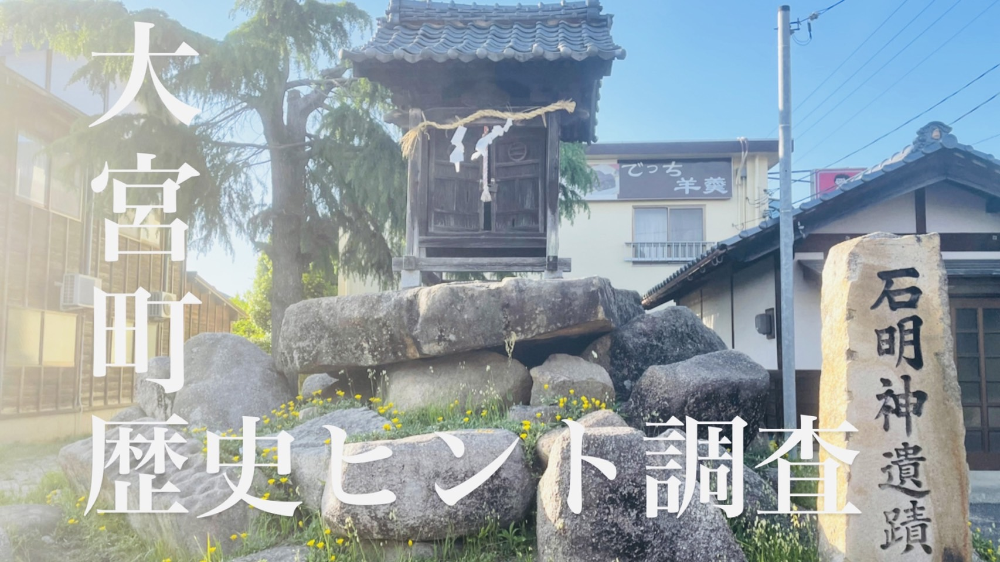
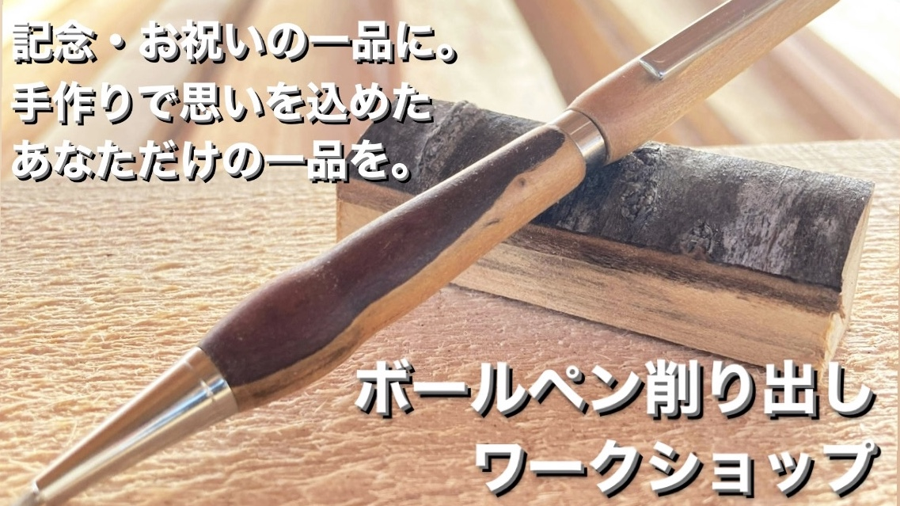
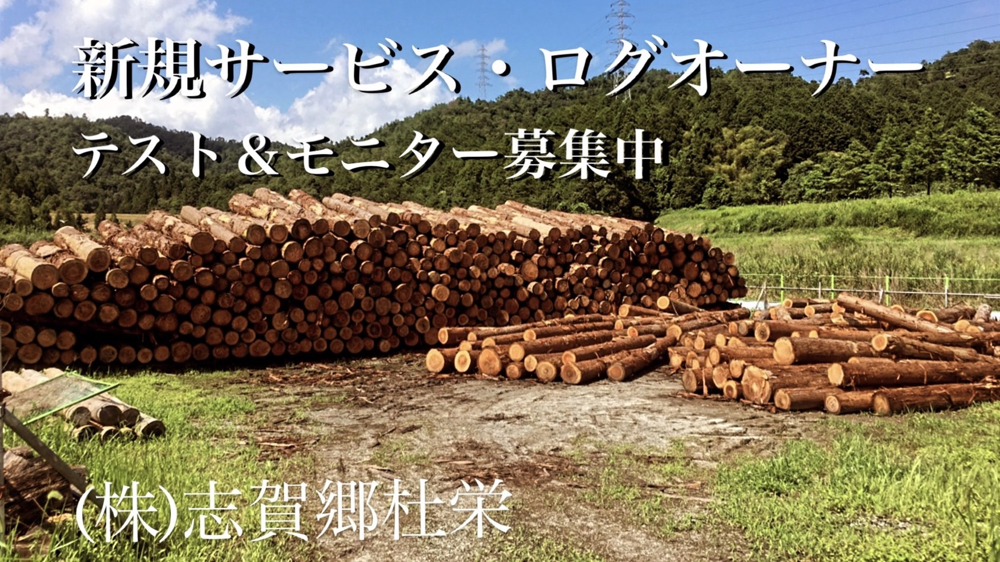
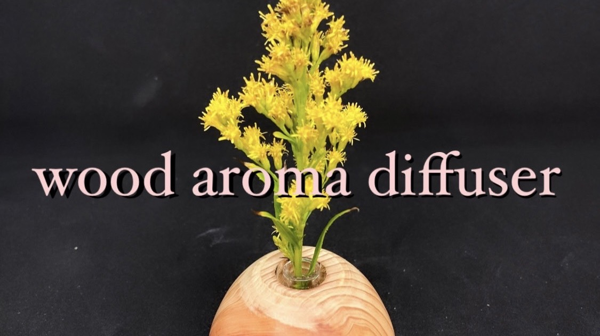
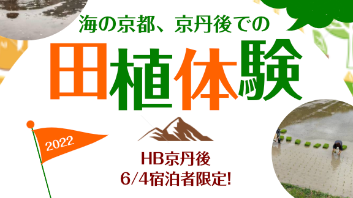
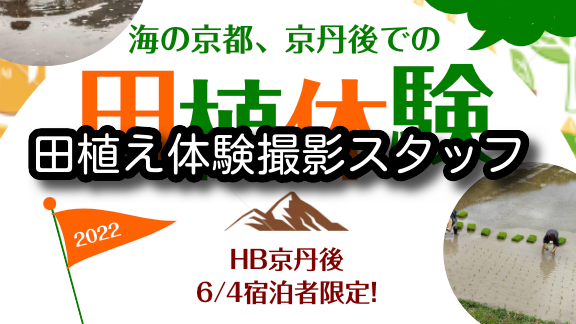
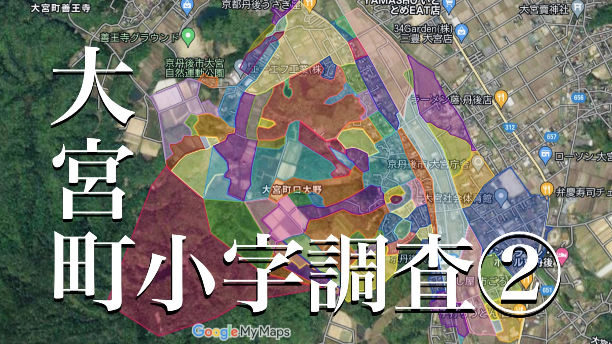
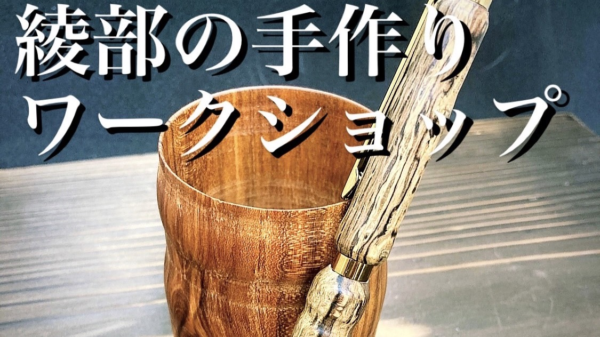
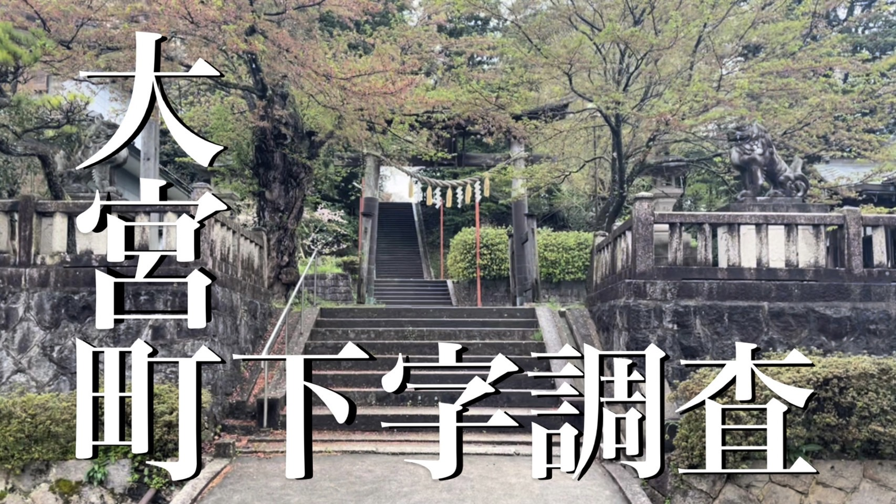

クエストボード
大宮町の歴史ヒント調査③
ジョブ型クエスト
SendoYa公式クエスト第3弾です！ 今回は大宮町小字マップを作成する一環として、小字の特定ではなく、歴史調査のヒントになる「ふるさと大宮を歩く」案内板の調査を行います。町内全域の調査となるため、SendoYaの車で移動をします。 1日のスケジュールはコチラから確認できます。 地域の意外にも知られていない情報に興味がある方はご参加ください！
依頼者 SendoYa
日時 2022/8/12 10:00 〜 17:00
場所 京丹後大宮駅
定員 3名
参加費 500円
募集期間 2022/8/11まで
木製ボールペン削出しワークショップ
ツアー型クエスト

京都府綾部市の木材を使ってあなただけの木製ボールペン・シャーペンを手作りするワークショップを開催します。
1本の角材から削り出して作る経験はここでしかできません！
記念やお祝いの一品に。自分だけの一本に。手作りで思いのこもった品を作ってみませんか？
学生さんから家族連れまで、どなたでも楽しんでいただける内容となっておりますのでご参加お待ちしています！
依頼者 (株)志賀郷杜栄
開催日時 希望の日時をご相談ください。
制作時間 約2時間程度
定員 1〜4名程度
価格 8000円/人
募集期間 2022/6/30まで
山の主・丸太一本オーナー制度
プロジェクト型クエスト

志賀郷杜栄の相川です！
新規サービスの立上げを企画したので、テスト&モニターの方を募集します！
丸太一本を自由にオーダー製材し放題のプランです。DIYがお好きな方、好みのサイズの材木が欲しい方におすすめです。ほしい木材の詳細などは、クエストマッチ後に相談しましょう！
依頼者 (株)志賀郷杜栄
期間 2022/7/1 〜 7/31
定員 8名
価格 17,000円（初回限定価格）
募集期間 2022/6/30まで
募集は終了しました
檜とアロマの香りレンタルサービス
プロジェクト型クエスト

志賀郷杜栄の相川です！
新規サービスの立上げを企画したので、テスト&モニターの方をを募集します！
ウッドアロマディフューザーのプランです。木製のアロマディフューザーとアロマオイルのセット販売になります。
詳細については、クエストマッチ後に相談しましょう！
依頼者 (株)志賀郷杜栄
期間 2022/7/1 〜 07/31
定員 10名
価格 3,000円（初回限定価格）
募集期間 2022/6/30まで
募集は終了しました
海の街・丹後町の田植え体験
ツアー型クエスト

※HB京丹後宿泊者様限定
お米農家からクエストを依頼します！
家族向けの田植えイベントになります。当日は撮影スタッフも参加するので、ご家族で楽しむ様子を収めたお写真を後日お渡しいたします！
夜には「宴」を予定しているので、ぜひそちらにもご参加ください。
依頼者 (株)野木源
日時 2022/6/4（土）12:45〜15:00
定員 30名
場所 野木源の田んぼ
京丹後市丹後町大山1011
参加費 5,000円/家族＋宴代
募集期間 2022/05/30まで
募集は終了しました
田植え体験撮影スタッフ
ツアー型クエスト

お米農家からクエストを依頼します！
家族向けの田植えイベントをお手伝いしてくれる方を募集します。
<< お手伝い内容 >>
・参加者の様子を撮影していただくこと
お礼として、夜の「宴」にご招待いたします！
依頼者 (株)野木源
日時 2022/6/4（土）12:45〜15:00
定員 1名
場所 野木源の田んぼ
京丹後市丹後町大山1011
報酬 「宴」への参加
募集期間 2022/05/30まで
募集は終了しました
大宮町明治モダンマップ調査②
ジョブ型クエスト

SendoYa公式クエスト第2弾です！
大宮町口大野地区の下字調査をお手伝いをしてくれる方募集！
徒歩で口大野地区を練り歩いて下字マップ作成のための情報収集をします。
仮作成・公開している小字図面マップを精査するために、現地に手がかりがないか調査をします。
依頼者 SendoYa
日時 2022/6/5 10:00 〜 17:00
定員 2名
参加費 なし
募集期間 2022/6/2まで
募集は終了しました
綾部の手作りワークショップ
ツアー型クエスト

志賀郷杜栄の相川です！
京都府綾部市の木材を使った、手作りワークショップを開催します。
コップ、一輪挿し、ボールペンのいずれかを旋盤機を使って作成できます。
学生さんから、家族連れでも、皆さん楽しんでいただけますのでご参加お待ちしています！
依頼者 (株)志賀郷杜栄
日時 2022/5/21 ①9:30 ～ 12:00 ②14:00 〜 16:30
2022/5/22 ③9:30 ～ 12:00 ④14:00 〜 16:30
定員 各回1〜4名程度
参加費 5000円前後 ※作成物による
募集期間 2022/5/20まで
募集は終了しました
大宮町明治モダンマップ調査
ツアー型クエスト

SendoYa公式クエスト第1弾です！
大宮町口大野地区の下字調査をお手伝いをしてくれる方募集！
徒歩で口大野地区を練り歩いて下字マップ作成のための情報収集をします。
下字調査そのものが初めてなので、根気よく調べてくれる方が来てくれるのをお待ちしています。
依頼者 SendoYa
日時 2022/5/5 10:00 〜 17:00
定員 2名
参加費 なし
募集期間 2022/5/4まで
募集は終了しました
京都福知山市LOGAINING 2022
ツアー型クエスト

初めてのクエスト依頼です！
①街を歩いて探索する「ロゲイニング」と②任意参加の食事会を予定しています。
京都府福知山市で、市内を探索して街を知って欲しい、
学生と社会人の交流拠点を作るための第一歩を踏み出したく依頼をします。
andHub主催の初イベントを楽しんでもらえる方をお待ちしています！
依頼者 (株)and Hub
日時 2022/5/4 13:00 〜 18:00
場所 福知山駅前
参加費 500円 ※食事代別
募集期間 2022/4/30 まで
募集は終了しました